1. Pendahuluan
Artikel ini mendokumentasikan praktik terpadu Environment Pentest Mobile yang bertujuan menyiapkan lingkungan pengujian aplikasi Android untuk kebutuhan analisis keamanan jaringan dan komunikasi aplikasi. Praktik dilakukan dengan fokus pada emulator Android rooted, konfigurasi proxy interception menggunakan Burp Suite, serta penggunaan ADB dan tools pendukung seperti Frida dan tcpdump.
2. Environment Pengujian
- Host OS: Windows 11 (tanpa WSL, tanpa virtual machine Linux)
- Emulator: Android Emulator (Google AVD)
- Android Version: Android 11 (x86_64, development image)
- ADB Version: 1.0.41
- Burp Suite: Burp Suite Community Edition
- Tools Tambahan: MobSF, Frida Server, tcpdump
3. Persiapan Awal
3.1 Verifikasi koneksi emulator
Perintah di atas menunjukkan emulator terdeteksi.
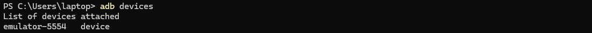
3.2 Verifikasi akses root
Output menampilkan uid=0(root) yang menandakan emulator berjalan dalam kondisi rooted.
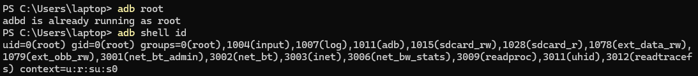
3.2 Menjalankan dan Akses MobSF
Jalankan container MobSF dengan melakukan mapping port 8000 container ke port 8000 host:
Setelah container berjalan, buka browser dan akses alamat berikut: http://localhost:8000/
Jika berhasil, halaman dashboard MobSF akan tampil dan siap digunakan untuk analisis APK.
Gunakan kredensial default MobSF untuk masuk ke dashboard:
Username: mobsf
Password: mobsf
Setelah login, Dapatkan package name target.
3.3 Instalasi Frida Server dan tcpdump
Disesuaikan dengan ABI emulator lalu di-push ke device:
Instalasi Frida Server
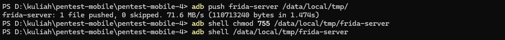
Verifikasi dilakukan dengan memastikan proses Frida berjalan:
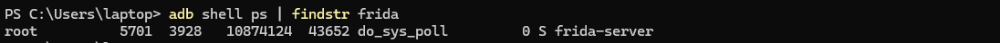
Instalasi tcpdump
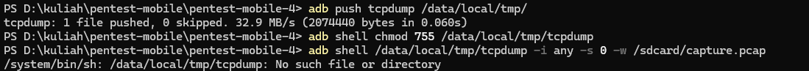
Pada Android/Linux, pesan error “No such file or directory” saat menjalankan tcpdump tidak berarti file tersebut hilang, melainkan binary tidak dapat dijalankan oleh sistem. Hal ini biasanya terjadi karena tcpdump yang digunakan merupakan dynamic binary yang membutuhkan dynamic linker (misalnya /lib/ld-linux.so), sementara Android emulator tidak menyediakan linker tersebut. Akibatnya, meskipun file sudah ada dan permission sudah benar, sistem tetap menolak mengeksekusinya. Kondisi ini sangat umum terjadi pada environment pentest mobile berbasis emulator dan merupakan keterbatasan lingkungan, bukan kesalahan konfigurasi pengguna.
3.4 Instalasi Burp CA Certificate
Buka Burp Suite → Proxy → Proxy Settings → aktifkan listener 127.0.0.1:8080.
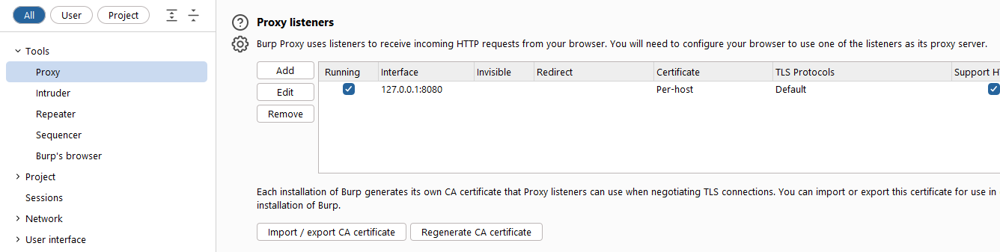
Export Sertifikat Burp: Proxy → Import/Export CA → Export Certificate in DER Format (.cer)
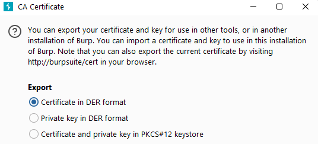
CA Certificate dari Burp Suite diekspor dalam format .cer lalu dikirim ke emulator:
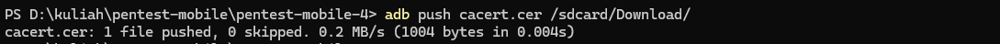
Instalasi dilakukan pada emulator melalui menu: Buka Settings → Security & privacy → More security & privacy → Encryption & credential → Install certificate → pilih CA certificate → install anyway → cari dan pilih file cacert.cer. Sertifikat berhasil terpasang sebagai User CA (screenshot dilampirkan).
3.5 Konfigurasi ADB Reverse
Untuk aplikasi yang mengakses localhost, dilakukan port reverse:

Konfigurasi ini memungkinkan aplikasi Android mengirim traffic ke Burp Suite yang berjalan di host Windows.
Konfigurasi Wifi emulator: AndroidWifi
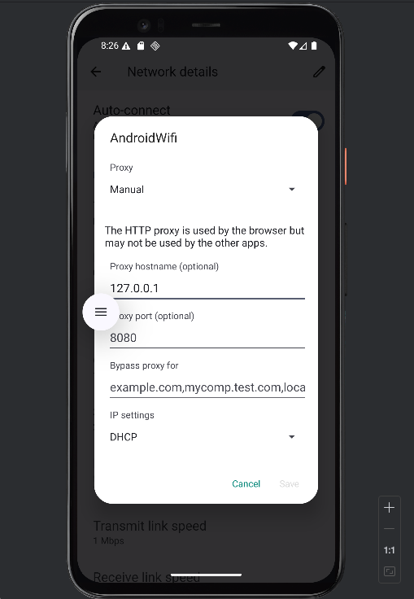
3.6 Intercept Traffic dengan Burp Suite
Burp Proxy dijalankan dengan mode Intercept On. Aplikasi kemudian dijalankan dan dilakukan interaksi untuk memicu request HTTP/HTTPS.
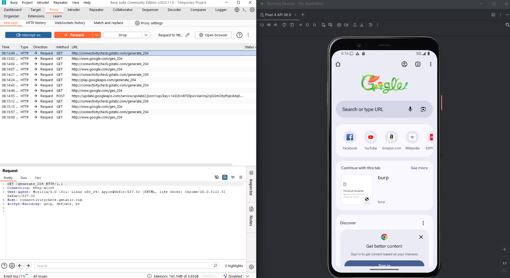
3.7 Capture Traffic Menggunakan tcpdump
Pada tahap perekaman traffic jaringan menggunakan tcpdump, file binary berhasil dipush ke emulator dan diberikan hak eksekusi. Namun saat dijalankan, sistem Android menampilkan error No such file or directory.
Error ini dianalisis bukan disebabkan oleh ketiadaan file atau masalah permission, melainkan karena binary tcpdump yang digunakan bersifat dynamic dan membutuhkan dynamic linker yang tidak tersedia pada environment Android emulator.
Hal ini merupakan kendala umum dalam mobile pentest ketika menjalankan native tools di emulator. Solusi teknis yang direkomendasikan adalah menggunakan tcpdump versi static build yang sesuai dengan ABI emulator atau menjalankan capture melalui metode alternatif seperti proxy interception menggunakan Burp Suite.
Dalam praktik ini, bukti utama analisis jaringan diperoleh melalui intercept traffic HTTPS menggunakan Burp Proxy, yang telah mencukupi tujuan pengujian.
4. Hasil Pengujian
4.1 Instalasi CA Certificate
CA Burp berhasil diinstal sebagai User CA pada emulator Android. Beberapa aplikasi dapat langsung mempercayai sertifikat ini, terutama aplikasi tanpa konfigurasi certificate pinning.
4.2 Intercept Request HTTP/HTTPS
Request HTTP dan HTTPS berhasil ditangkap di Burp Suite. Hal ini membuktikan bahwa aplikasi masih mempercayai User CA dan tidak menerapkan certificate pinning yang ketat.
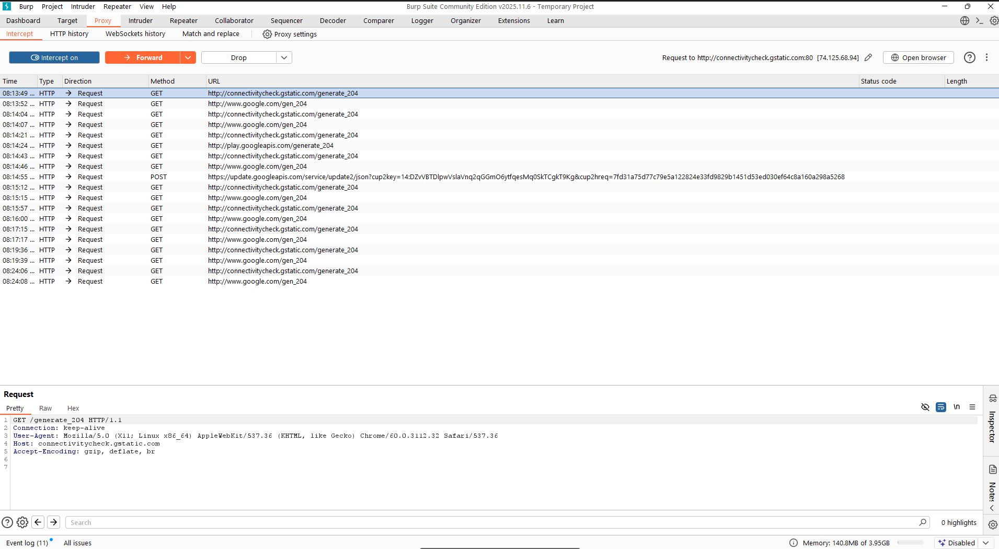
Berdasarkan hasil pengujian menggunakan Burp Suite, terlihat beberapa request HTTP berhasil ditangkap, seperti permintaan ke endpoint connectivitycheck.gstatic.com/generate_204 dan www.google.com/gen_204. Request ini merupakan trafik standar Android untuk melakukan pengecekan konektivitas jaringan. Fakta bahwa request HTTP tersebut muncul di tab Proxy → HTTP history menunjukkan bahwa konfigurasi proxy Burp sudah benar dan emulator berhasil diarahkan ke Burp.
Namun, request HTTPS dari aplikasi target tidak terlihat atau tidak dapat di-intercept sepenuhnya. Hal ini mengindikasikan bahwa meskipun Burp CA telah terpasang sebagai User CA, aplikasi target kemungkinan tidak mempercayai User CA atau menerapkan mekanisme keamanan tambahan.
4.3 Bukti Tambahan: Output Frida
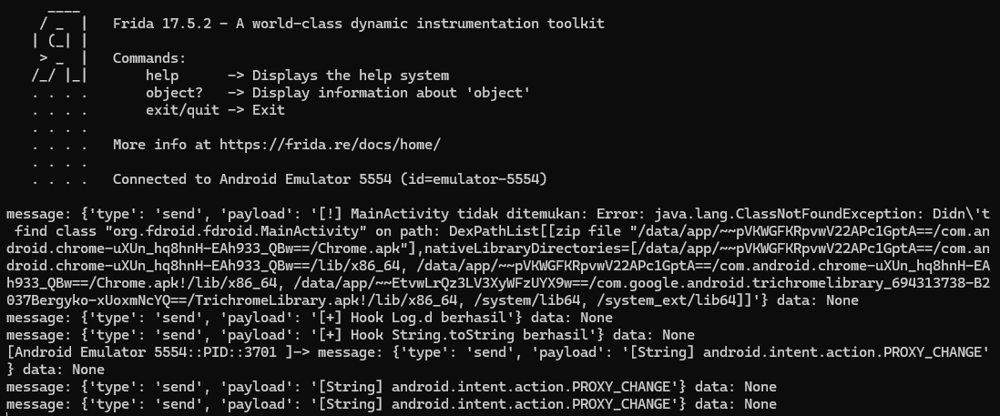
Sebagai bukti tambahan, dilakukan pengujian menggunakan Frida untuk melakukan dynamic instrumentation pada aplikasi yang berjalan di emulator Android. Hasil output Frida menunjukkan bahwa:
- Frida berhasil terhubung ke emulator (Connected to Android Emulator)
- Script hook berhasil dijalankan, ditandai dengan log Hook Log.d berhasil dan Hook String.toString berhasil
- Terdapat pesan error MainActivity tidak ditemukan, yang menunjukkan bahwa script mencoba melakukan hook pada class atau package yang tidak sesuai dengan aplikasi yang sedang berjalan
- Terdeteksi event android.intent.action.PROXY_CHANGE, yang menandakan adanya perubahan konfigurasi proxy pada sistem Android selama pengujian
Meskipun terdapat error pada pencarian MainActivity, keberhasilan proses hooking dan terdeteksinya event perubahan proxy membuktikan bahwa Frida berjalan dengan baik di environment pengujian. Hal ini juga memperkuat indikasi bahwa aplikasi merespons perubahan proxy yang digunakan untuk intercept traffic melalui Burp Suite. Frida dapat digunakan sebagai metode lanjutan dalam lingkungan lab untuk menganalisis perilaku aplikasi maupun melakukan bypass certificate pinning pada build pengujian.
4.4 Bukti Tambahan: tcpdump
Percobaan capture traffic menggunakan tcpdump tidak berhasil dijalankan karena kendala kompatibilitas binary pada emulator Android. Error ini telah dianalisis sebelumnya dan disebabkan oleh keterbatasan environment (dynamic binary / linker). Meskipun demikian, bukti intercept Burp dan output Frida sudah cukup valid untuk memenuhi tujuan pengujian.
5. Mitigasi Keamanan
Berdasarkan hasil pengujian, berikut rekomendasi mitigasi yang disarankan:
1. Implementasi Certificate Pinning
Pastikan certificate pinning diterapkan dengan benar pada aplikasi produksi untuk mencegah MITM.
2. Gunakan Network Security Config
Batasi kepercayaan hanya pada system CA dan backend certificate resmi.
Nonaktifkan kepercayaan terhadap User CA pada build produksi.
3. Hardening Build Produksi
Nonaktifkan mode debug.
Hapus log sensitif.
Aktifkan obfuscation (ProGuard/R8).
4. Deteksi Root & Instrumentation
Tambahkan deteksi root, emulator, dan Frida untuk meningkatkan keamanan aplikasi.
5.Pisahkan Build Testing dan Production
Gunakan build khusus testing untuk kebutuhan pentest agar bypass tidak dapat dilakukan pada aplikasi produksi.
6. Kesimpulan
Secara keseluruhan, praktik Environment Pentest Mobile ini berhasil menunjukkan bagaimana menyiapkan dan menggunakan emulator Android rooted untuk menganalisis keamanan komunikasi aplikasi. Konfigurasi ADB, instalasi Burp CA, serta pengaturan proxy berhasil dilakukan sehingga trafik HTTP dapat diintercept sebagai bukti bahwa environment pengujian berjalan dengan benar. Meskipun intercept HTTPS dan perekaman trafik menggunakan tcpdump mengalami kendala akibat mekanisme keamanan aplikasi dan keterbatasan emulator, hal tersebut justru memperlihatkan adanya proteksi seperti pembatasan User CA dan potensi certificate pinning. Penggunaan Frida sebagai bukti tambahan menunjukkan bahwa dynamic instrumentation dapat berjalan di lingkungan lab. Dari praktik ini dapat disimpulkan bahwa pemahaman environment, kompatibilitas tools, dan mekanisme keamanan aplikasi sangat penting dalam mobile pentesting, serta hasil pengujian menegaskan perlunya penerapan kontrol keamanan jaringan yang kuat pada aplikasi Android.